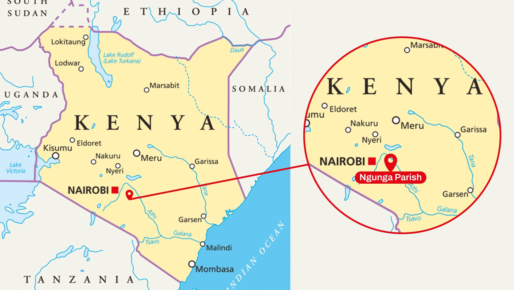
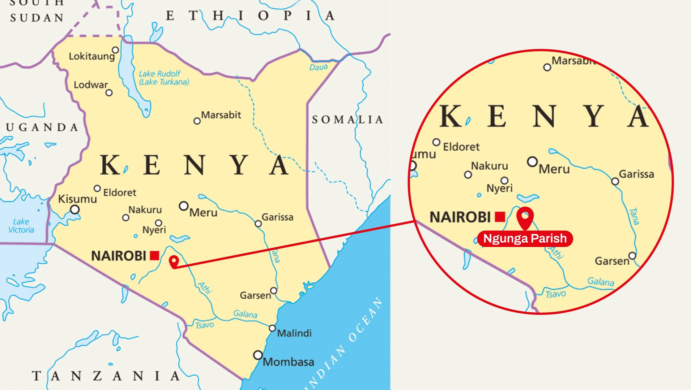

Why build a school in Kenya?
The inspiration for this project came from Sister Hitha, a cherished mentor and former school director with whom we have a long history – including our collaborative efforts in establishing a school in Kerala, India. Now in Kenya, Sister Hitha leads a dedicated team of Indian and Kenyan nuns committed to providing educational opportunities for children who, due to financial hardships, cannot attend public schools. Our initiative not only seeks to lift these children out of poverty through education but also aims to create local opportunities that help reduce illegal immigration.
A Detailed look at the Project
Gruppo Nairobi is building a world-class primary school in the heart of Kenya, providing children with quality education that fosters creativity and growth. With six classrooms planned on donated land, this vision needs €180,000 to become a reality. Your support will help create a space where young minds can thrive.
Plans and Renderings
 

{kind=link}
{kind=link}
The school will be built in Kenya, approximately 90 km from Nairobi, in the Municipality of Ngunga Paris within the Machakos District. Situated near the Tanzanian border, this region suffers from high poverty rates and limited access to quality educational facilities.
Donate Now
Embrace the opportunity to transform lives. Whether you can give a lot or a little, every cent counts. Together, we can impact the future of education in Kenya. It’s time for a step towards better education, and you can help make it happen with your generous donation.
About Gruppo Nairobi
We are Gruppo Nairobi, a non-profit dedicated to expanding access to education for children in underprivileged communities. Guided by the belief that education is the key to development, we work to create opportunities that empower the next generation. With a strong commitment to community values, our efforts aim to make a lasting impact where it’s needed most.

The Association
Pierdomenico MazzaPresident
Franco AbelaVice President
Mattia RinaldiAdministrator